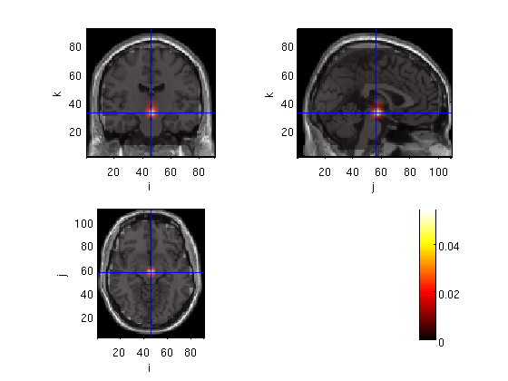
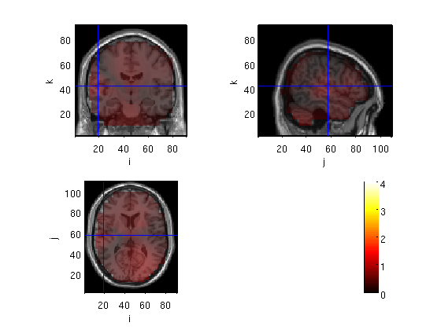
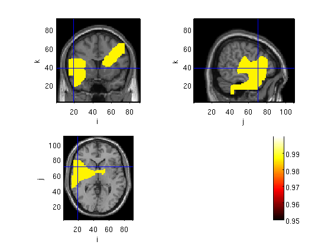
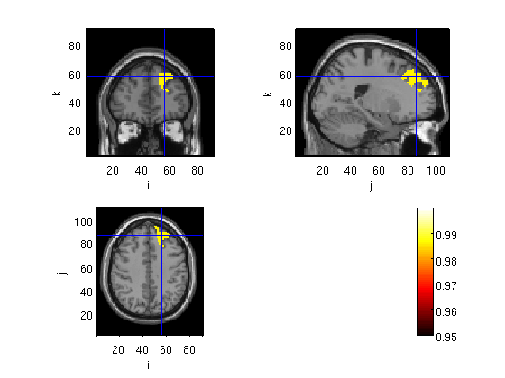
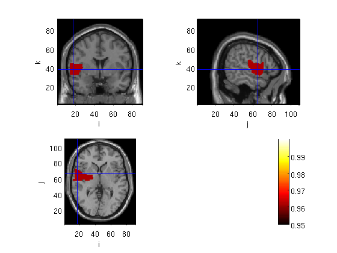
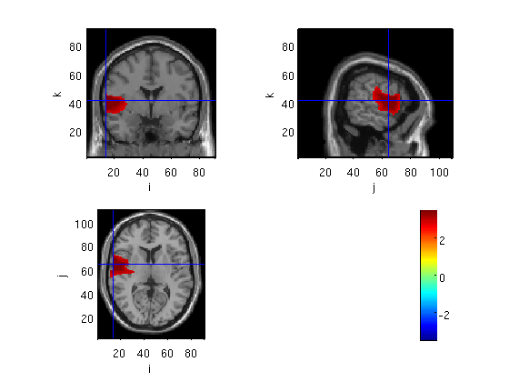
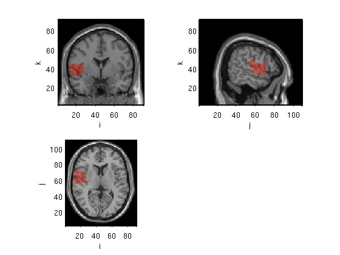
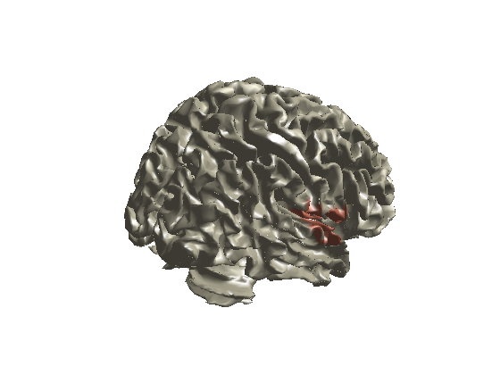
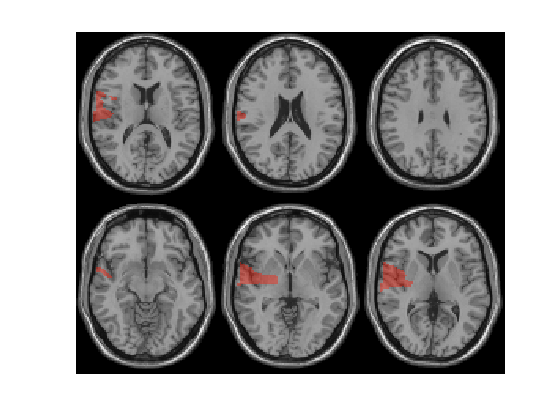
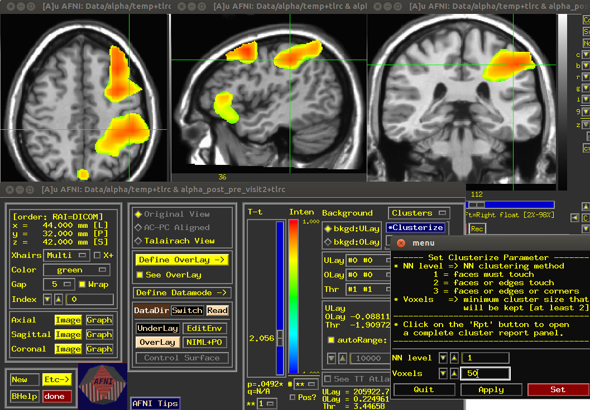

Group statistics, source level
Here we analyze beamforming results for 25 subjects. Power was computed for each virtual sensor for the M170 window pow=mean(timecourse.*timecourse); the data was then interpolated over the template MRI.
Contents
- Load data and display raw data
- Neural Activity Index (NAI), compute subordinate to dominant ratio
- t-test for selected voxels
- cluster based permutation statistics
- Plot the significant clusters
- ROI mask
- Plot t distribution + Atlas
- Change the cluster alpha
- Plot methods: ortho (transparancy added)
- Plot methods: surface
- Plot method: slice
- AFNI clustering and simulation
Load data and display raw data
the files to be loaded are output of ft_sourcegrandaverage, after masking voxels outside the brain.
cd amb load domMskdp load subMskdp load ~/ft_BIU/matlab/LCMV/sMRI subMskdp.anatomy=sMRI.anatomy; cfg = []; cfg.funparameter = 'avg.pow'; cfg.method='ortho'; figure ft_sourceplot(cfg,subMskdp)
the input is volume data with dimensions [91 109 91]
not downsampling anatomy
not downsampling avg.pow
the call to "ft_volumedownsample" took 0 seconds and an estimated 0 MB
no masking parameter
voxel 312540, indices [46 56 32], location [0.0 -16.0 -10.0] mm, value 0.054797
scaling anatomy
scaling anatomy
scaling anatomy
nas = undefined
lpa = undefined
rpa = undefined
the call to "ft_sourceplot" took 0 seconds and an estimated 0 MB
ans =
funparameter: 'avg.pow'
method: 'ortho'
trackconfig: 'off'
checkconfig: 'loose'
checksize: 100000
showcallinfo: 'yes'
maskparameter: {}
downsample: 1
title: ''
atlas: []
marker: []
markersize: 5
markercolor: [1 1 1]
anaparameter: 'anatomy'
funcolormap: [64x3 double]
funcolorlim: 'zeromax'
opacitymap: [1x64 double]
opacitylim: 'auto'
roi: []
location: 'auto'
locationcoordinates: 'head'
crosshair: 'yes'
colorbar: 'yes'
axis: 'on'
interactive: 'no'
queryrange: 3
coordsys: []
units: []
nslices: 20
slicedim: 3
slicerange: 'auto'
surfdownsample: 1
surffile: 'single_subj_T1.mat'
surfinflated: []
sphereradius: []
projvec: 1
projweight: 1
projcomb: 'mean'
projthresh: []
distmat: []
camlight: 'yes'
renderer: 'opengl'
callinfo: [1x1 struct]
version: [1x1 struct]
previous: [1x1 struct]
 Neural Activity Index (NAI), compute subordinate to dominant ratio
sub_dom=subMskdp; sub_dom.avg.nai=(subMskdp.avg.pow-domMskdp.avg.pow)./domMskdp.avg.pow; cfg.funparameter = 'avg.nai'; %cfg.interactive = 'yes'; cfg.location=[55 -15 10] cfg.funcolorlim=[0 4]; ft_sourceplot(cfg,sub_dom)
cfg =
funparameter: 'avg.nai'
method: 'ortho'
location: [55 -15 10]
the input is volume data with dimensions [91 109 91]
not downsampling anatomy
not downsampling avg.nai
the call to "ft_volumedownsample" took 0 seconds and an estimated 0 MB
no masking parameter
voxel 411794, indices [19 57 42], location [54.0 -14.0 10.0] mm, value 0.660093
scaling anatomy
scaling anatomy
scaling anatomy
nas = undefined
lpa = undefined
rpa = undefined
the call to "ft_sourceplot" took 0 seconds and an estimated 0 MB
ans =
funparameter: 'avg.nai'
method: 'ortho'
location: [55 -15 10]
funcolorlim: [0 4]
trackconfig: 'off'
checkconfig: 'loose'
checksize: 100000
showcallinfo: 'yes'
maskparameter: {}
downsample: 1
title: ''
atlas: []
marker: []
markersize: 5
markercolor: [1 1 1]
anaparameter: 'anatomy'
funcolormap: [64x3 double]
opacitymap: [1x64 double]
opacitylim: 'auto'
roi: []
locationcoordinates: 'head'
crosshair: 'yes'
colorbar: 'yes'
axis: 'on'
interactive: 'no'
queryrange: 3
coordsys: []
units: []
nslices: 20
slicedim: 3
slicerange: 'auto'
surfdownsample: 1
surffile: 'single_subj_T1.mat'
surfinflated: []
sphereradius: []
projvec: 1
projweight: 1
projcomb: 'mean'
projthresh: []
distmat: []
camlight: 'yes'
renderer: 'opengl'
callinfo: [1x1 struct]
version: [1x1 struct]
previous: [1x1 struct]
 t-test for selected voxels
voxind=312631; %center of head for subji=1:25 sub(subji,1)=subMskdp.trial(1,subji).pow(voxind,1); dom(subji,1)=domMskdp.trial(1,subji).pow(voxind,1); end [h,p]=ttest(sub,dom) voxind=361828; %right temporal for subji=1:25 sub(subji,1)=subMskdp.trial(1,subji).pow(voxind,1); dom(subji,1)=domMskdp.trial(1,subji).pow(voxind,1); end [h,p]=ttest(sub,dom)
h =
0
p =
0.2486
h =
1
p =
0.0114
cluster based permutation statistics
cfg=[]; cfg.dim = subMskdp.dim; cfg.method = 'montecarlo'; cfg.statistic = 'depsamplesT'; cfg.parameter = 'pow'; cfg.correctm = 'cluster'; % 'no', 'max', 'cluster', 'bonferoni', 'holms', 'fdr' cfg.numrandomization = 500; cfg.alpha = 0.05 cfg.clusteralpha= 0.05; cfg.tail = 0; cfg.design(1,:) = [1:25 1:25]; cfg.design(2,:) = [ones(1,25) ones(1,25)*2]; cfg.uvar = 1; % row of design matrix that contains unit variable (in this case: subjects) cfg.ivar = 2; % row of design matrix that contains independent variable (the conditions) stat = ft_sourcestatistics(cfg,subMskdp,domMskdp); save Cl05_M170masked_S_Dstat stat
cfg =
dim: [91 109 91]
method: 'montecarlo'
statistic: 'depsamplesT'
parameter: 'pow'
correctm: 'cluster'
numrandomization: 500
alpha: 0.0500
only selecting voxels inside the brain for statistics (28.0%)
using "statistics_montecarlo" for the statistical testing
Warning: doing a two-sided test without correcting p-values or alpha-level, p-values and alpha-level will
reflect one-sided tests per tail
using "statfun_depsamplesT" for the single-sample statistics
constructing randomized design
total number of measurements = 50
total number of variables = 2
number of independent variables = 1
number of unit variables = 1
number of within-cell variables = 0
number of control variables = 0
using a permutation resampling approach
repeated measurement in variable 1 over 25 levels
number of repeated measurements in each level is 2 2 2 2 2 2 2 2 2 2 2 2 2 2 2 2 2 2 2 2 2 2 2 2 2
computing a parametric threshold for clustering
computing statistic
estimated time per randomization is 0 seconds
computing statistic 1 from 500
computing statistic 2 from 500
.
.
.
computing statistic 498 from 500
computing statistic 499 from 500
computing statistic 500 from 500
found 4 positive clusters in observed data
found 0 negative clusters in observed data
computing clusters in randomization
computing clusters in randomization 1 from 500
computing clusters in randomization 2 from 500
.
.
.
computing clusters in randomization 497 from 500
computing clusters in randomization 498 from 500
computing clusters in randomization 499 from 500
computing clusters in randomization 500 from 500
using a cluster-based method for multiple comparison correction
the returned probabilities and the thresholded mask are corrected for multiple comparisons
the call to "ft_sourcestatistics" took 110 seconds and an estimated 1 MB
Plot the significant clusters
probplot=stat; probplot.prob1=1-probplot.prob; lowlim=0.95; probplot.mask=(probplot.prob1>=lowlim); probplot.anatomy=sMRI.anatomy; cfg = []; cfg.funcolorlim = [lowlim 1]; cfg.interactive = 'yes'; cfg.funparameter = 'prob1'; cfg.maskparameter= 'mask'; cfg.method='ortho'; cfg.inputcoord='mni'; cfg.atlas='~/ft_BIU/matlab/files/aal_MNI_V4.nii'; cfg.coordsys='mni'; cfg.roi='Frontal_Sup_L' cfg.location=[-20 -44 40];% wer= -50 -45 10 , broca= -50 25 0, fussiform = -42 -58 -11(cohen et al 2000), change x to positive for RH. %cfg.crosshair='no'; figure; ft_sourceplot(cfg,probplot);
cfg =
funcolorlim: [0.9500 1]
interactive: 'yes'
funparameter: 'prob1'
maskparameter: 'mask'
method: 'ortho'
inputcoord: 'mni'
atlas: '~/ft_BIU/matlab/files/aal_MNI_V4.nii'
coordsys: 'mni'
roi: 'Frontal_Sup_L'
the input is volume data with dimensions [91 109 91]
not downsampling anatomy
not downsampling mask
not downsampling prob1
the call to "ft_volumedownsample" took 0 seconds and an estimated 0 MB
reading aal_MNI_V4 atlas coordinates and labels
Rescaling NIFTI: slope = 1, intercept = 0
the call to "ft_prepare_atlas" took 0 seconds and an estimated 0 MB
Warning: The field cfg.box is forbidden, it will be removed from your configuration
Rescaling NIFTI: slope = 1, intercept = 0
the call to "ft_prepare_atlas" took 0 seconds and an estimated 0 MB
found 1 matching anatomical labels
constructing mask for Frontal_Sup_L
3599 voxels in mask, which is 0.399 % of total volume
the call to "ft_volumelookup" took 0 seconds and an estimated 0 MB
click with mouse button to reposition the cursor
press n/l/r on keyboard to record a fiducial position
press q on keyboard to quit interactive mode
voxel 559251, indices [56 42 57], mni coordinates [-20.0 -44.0 40.0] mm, value 0.000000
aal_MNI_V4 labels: not found
scaling anatomy
scaling anatomy
scaling anatomy
nas = undefined
lpa = undefined
rpa = undefined
click with mouse button to reposition the cursor
press n/l/r on keyboard to record a fiducial position
press q on keyboard to quit interactive mode
voxel 563164, indices [56 85 57], mni coordinates [-20.0 42.0 40.0] mm, value 0.986028
aal_MNI_V4 labels: Frontal_Sup_L
scaling anatomy
scaling anatomy
scaling anatomy
the call to "ft_sourceplot" took 215 seconds and an estimated 0 MB
 ROI mask
cfg.roi='Frontal_Sup_L' cfg.location=[-20 -44 40];% wer= -50 -45 10 , broca= -50 25 0, fussiform = -42 -58 -11(cohen et al 2000), change x to positive for RH. %cfg.crosshair='no'; figure; ft_sourceplot(cfg,probplot);
cfg =
funcolorlim: [0.9500 1]
interactive: 'yes'
funparameter: 'prob1'
maskparameter: 'mask'
method: 'ortho'
inputcoord: 'mni'
atlas: '~/ft_BIU/matlab/files/aal_MNI_V4.nii'
coordsys: 'mni'
roi: 'Frontal_Sup_L'
location: [-20 -44 40]
the input is volume data with dimensions [91 109 91]
not downsampling anatomy
not downsampling mask
not downsampling prob1
the call to "ft_volumedownsample" took 0 seconds and an estimated 0 MB
reading aal_MNI_V4 atlas coordinates and labels
Rescaling NIFTI: slope = 1, intercept = 0
the call to "ft_prepare_atlas" took 0 seconds and an estimated 0 MB
Warning: The field cfg.box is forbidden, it will be removed from your configuration
Rescaling NIFTI: slope = 1, intercept = 0
the call to "ft_prepare_atlas" took 0 seconds and an estimated 0 MB
found 1 matching anatomical labels
constructing mask for Frontal_Sup_L
3599 voxels in mask, which is 0.399 % of total volume
the call to "ft_volumelookup" took 0 seconds and an estimated 0 MB
click with mouse button to reposition the cursor
press n/l/r on keyboard to record a fiducial position
press q on keyboard to quit interactive mode
voxel 559251, indices [56 42 57], mni coordinates [-20.0 -44.0 40.0] mm, value 0.000000
aal_MNI_V4 labels: not found
scaling anatomy
scaling anatomy
scaling anatomy
nas = undefined
lpa = undefined
rpa = undefined
click with mouse button to reposition the cursor
press n/l/r on keyboard to record a fiducial position
press q on keyboard to quit interactive mode
voxel 563255, indices [56 86 57], mni coordinates [-20.0 44.0 40.0] mm, value 0.986028
aal_MNI_V4 labels: Frontal_Sup_L
scaling anatomy
scaling anatomy
scaling anatomy
the call to "ft_sourceplot" took 12 seconds and an estimated 0 MB
 Plot t distribution + Atlas
%cfg.parameter = 'stat'; statplot=stat; statplot.anatomy=sMRI.anatomy; cfg=[]; cfg=rmfield(cfg1,'funcolorlim'); cfg.funcolorlim = [-3.5 3.5]; cfg.funparameter = 'stat'; cfg.method='ortho'; cfg.inputcoord='mni'; cfg.atlas='aal_MNI_V4.img'; figure ft_sourceplot(cfg2,statplot)
Error using ==> rmfield at 40 A field named 'funcolorlim' doesn't exist. Error in ==> course12 at 96 cfg=rmfield(cfg1,'funcolorlim');
Change the cluster alpha
I arranged the stats and plots in a function. what we did so far is similar to this: [cfg1,probplot,cfg2,statplot]=ambMonteClust12('Cl05_M170masked_S_D','subMskdp','domMskdp',0.95,0.05); Now we change cluster criterion for 0.05 to 0.01.
[cfg1,probplot,cfg2,statplot]=ambMonteClust12('Cl01_M170masked_S_D','subMskdp','domMskdp',0.95,0.01); 
Plot methods: ortho (transparancy added)
ambPlotStat12('Cl01_M170masked_S_D',[0.95 0.98],'ortho',60); 
Plot methods: surface
ambPlotStat12('Cl01_M170masked_S_D',[0.95 0.98],'surface'); 
Plot methods: slice
ambPlotStat12('Cl01_M170masked_S_D',[0.95 0.98],'slice'); 
AFNI clustering and simulation
cd ../alpha !~/abin/afni & 